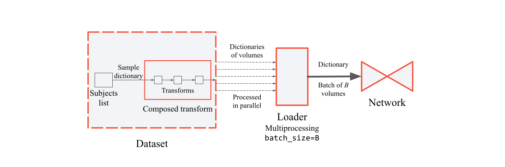

Dataset¶
ImagesDataset¶
-
class
torchio.data.ImagesDataset(subjects: Sequence[torchio.data.subject.Subject], transform: Optional[Callable] = None)[source]¶ Bases:
torch.utils.data.dataset.DatasetBase TorchIO dataset.
ImagesDatasetis a reader of 3D medical images that directly inherits fromtorch.utils.data.Dataset. It can be used with atorch.utils.data.DataLoaderfor efficient loading and augmentation. It receives a list of subjects, where each subject is an instance oftorchio.data.subject.Subjectcontaining instances oftorchio.data.image.Image. The file format must be compatible with NiBabel or SimpleITK readers. It can also be a directory containing DICOM files.Indexing an
ImagesDatasetreturns an instance ofSubject. Check out the documentation for both classes for usage examples.Example
>>> sample = images_dataset[0] >>> sample Subject(Keys: ('image', 'label'); images: 2) >>> image = sample['image'] # or sample.image >>> image.shape torch.Size([1, 176, 256, 256]) >>> image.affine array([[ 0.03, 1.13, -0.08, -88.54], [ 0.06, 0.08, 0.95, -129.66], [ 1.18, -0.06, -0.11, -67.15], [ 0. , 0. , 0. , 1. ]])
- Parameters
subjects – Sequence of instances of
Subject.transform – An instance of
torchio.transforms.Transformthat will be applied to each sample.
Example
>>> import torchio >>> from torchio import ImagesDataset, Image, Subject >>> from torchio.transforms import RescaleIntensity, RandomAffine, Compose >>> subject_a = Subject([ ... t1=Image('t1.nrrd', type=torchio.INTENSITY), ... t2=Image('t2.mha', type=torchio.INTENSITY), ... label=Image('t1_seg.nii.gz', type=torchio.LABEL), ... age=31, ... name='Fernando Perez', >>> ]) >>> subject_b = Subject( ... t1=Image('colin27_t1_tal_lin.minc', type=torchio.INTENSITY), ... t2=Image('colin27_t2_tal_lin_dicom', type=torchio.INTENSITY), ... label=Image('colin27_seg1.nii.gz', type=torchio.LABEL), ... age=56, ... name='Colin Holmes', ... ) >>> subjects_list = [subject_a, subject_b] >>> transforms = [ ... RescaleIntensity((0, 1)), ... RandomAffine(), ... ] >>> transform = Compose(transforms) >>> subjects_dataset = ImagesDataset(subjects_list, transform=transform) >>> subject_sample = subjects_dataset[0]
-
set_transform(transform: Optional[Callable]) → None[source]¶ Set the
transformattribute.- Parameters
transform – An instance of
torchio.transforms.Transform.
Subject¶
-
class
torchio.data.Subject(*args, **kwargs: Dict[str, Any])[source]¶ Bases:
dictClass to store information about the images corresponding to a subject.
- Parameters
*args – If provided, a dictionary of items.
**kwargs – Items that will be added to the subject sample.
Example
>>> import torchio >>> from torchio import Image, Subject >>> # One way: >>> subject = Subject( ... one_image=Image('path_to_image.nii.gz', type=torchio.INTENSITY), ... a_segmentation=Image('path_to_seg.nii.gz', type=torchio.LABEL), ... age=45, ... name='John Doe', ... hospital='Hospital Juan Negrín', ... ) >>> # If you want to create the mapping before, or have spaces in the keys: >>> subject_dict = { ... 'one image': Image('path_to_image.nii.gz', type=torchio.INTENSITY), ... 'a segmentation': Image('path_to_seg.nii.gz', type=torchio.LABEL), ... 'age': 45, ... 'name': 'John Doe', ... 'hospital': 'Hospital Juan Negrín', ... } >>> Subject(subject_dict)
-
property
shape¶ Return shape of first image in subject.
Consistency of shapes across images in the subject is checked first.
-
property
spacing¶ Return spacing of first image in subject.
Consistency of shapes across images in the subject is checked first.
-
property
spatial_shape¶ Return spatial shape of first image in subject.
Consistency of shapes across images in the subject is checked first.
ScalarImage¶
-
class
torchio.data.ScalarImage(*args, **kwargs)[source]¶ Bases:
torchio.data.image.ImageAlias for
Imageof typetorchio.INTENSITY.Example
>>> import torch >>> import torchio >>> image = torchio.ScalarImage('t1.nii.gz') # loading from a file >>> image = torchio.ScalarImage(tensor=torch.rand(128, 128, 68)) # from tensor >>> data, affine = image.data, image.affine >>> affine.shape (4, 4) >>> image.data is image[torchio.DATA] True >>> image.data is image.tensor True >>> type(image.data) torch.Tensor
See
Imagefor more information.- Raises
ValueError – A
typeis used for instantiation.
LabelMap¶
-
class
torchio.data.LabelMap(*args, **kwargs)[source]¶ Bases:
torchio.data.image.ImageAlias for
Imageof typetorchio.LABEL.Example
>>> import torch >>> import torchio >>> labels = torchio.LabelMap(tensor=torch.rand(128, 128, 68) > 0.5) >>> labels = torchio.LabelMap('t1_seg.nii.gz') # loading from a file
See
Imagefor more information.- Raises
ValueError – If a value for
typeis given.
Image¶
-
class
torchio.data.Image(path: Optional[Union[pathlib.Path, str]] = None, type: str = 'intensity', tensor: Optional[Union[torch.Tensor, numpy.ndarray]] = None, affine: Optional[Union[torch.Tensor, numpy.ndarray]] = None, check_nans: bool = True, num_spatial_dims: Optional[int] = None, channels_last: Optional[bool] = None, **kwargs: Dict[str, Any])[source]¶ Bases:
dictTorchIO image.
For information about medical image orientation, check out NiBabel docs, the 3D Slicer wiki, Graham Wideman’s website, FSL docs or SimpleITK docs.
- Parameters
path – Path to a file that can be read by
SimpleITKornibabel, or to a directory containing DICOM files. Iftensoris given, the data inpathwill not be read. The data is expected to be 2D or 3D, and may have multiple channels (seenum_spatial_dimsandchannels_last).type – Type of image, such as
torchio.INTENSITYortorchio.LABEL. This will be used by the transforms to decide whether to apply an operation, or which interpolation to use when resampling. For example, preprocessing and augmentation intensity transforms will only be applied to images with typetorchio.INTENSITY. Spatial transforms will be applied to all types, and nearest neighbor interpolation is always used to resample images with typetorchio.LABEL. The typetorchio.SAMPLING_MAPmay be used with instances ofWeightedSampler.tensor – If
pathis not given,tensormust be a 4Dtorch.Tensoror NumPy array with dimensions \((C, D, H, W)\). If it is not 4D, TorchIO will try to guess the dimensions meanings. If 2D, the shape will be interpreted as \((H, W)\). If 3D, the number of spatial dimensions should be determined innum_spatial_dims. Ifnum_spatial_dimsis not given and the shape is 3 along the first or last dimensions, it will be interpreted as a multichannel 2D image. Otherwise, it be interpreted as a 3D image with a single channel.affine – If
pathis not given,affinemust be a \(4 \times 4\) NumPy array. IfNone,affineis an identity matrix.check_nans – If
True, issues a warning if NaNs are found in the image. IfFalse, images will not be checked for the presence of NaNs.num_spatial_dims – If
2and the input tensor has 3 dimensions, it will be interpreted as a multichannel 2D image. If3and the input has 3 dimensions, it will be interpreted as a single-channel 3D volume.channels_last – If
True, the last dimension of the input will be interpreted as the channels. Defaults toTrueifpathis given andFalseotherwise.**kwargs – Items that will be added to the image dictionary, e.g. acquisition parameters.
Example
>>> import torch >>> import torchio >>> # Loading from a file >>> t1_image = torchio.Image('t1.nii.gz', type=torchio.INTENSITY) >>> label_image = torchio.Image('t1_seg.nii.gz', type=torchio.LABEL) >>> image = torchio.Image(tensor=torch.rand(3, 4, 5)) >>> image = torchio.Image('safe_image.nrrd', check_nans=False) >>> data, affine = image.data, image.affine >>> affine.shape (4, 4) >>> image.data is image[torchio.DATA] True >>> image.data is image.tensor True >>> type(image.data) torch.Tensor
TorchIO images are lazy loaders, i.e. the data is only loaded from disk when needed.
Example
>>> import torchio >>> image = torchio.Image('t1.nii.gz') >>> image # not loaded yet Image(path: t1.nii.gz; type: intensity) >>> times_two = 2 * image.data # data is loaded and cached here >>> image Image(shape: (1, 256, 256, 176); spacing: (1.00, 1.00, 1.00); orientation: PIR+; memory: 44.0 MiB; type: intensity) >>> image.save('doubled_image.nii.gz')
-
get_center(lps: bool = False) → Tuple[float, float, float][source]¶ Get image center in RAS+ or LPS+ coordinates.
- Parameters
lps – If
True, the coordinates will be in LPS+ orientation, i.e. the first dimension grows towards the left, etc. Otherwise, the coordinates will be in RAS+ orientation.
-
load() → Tuple[torch.Tensor, numpy.ndarray][source]¶ Load the image from disk.
- Returns
Tuple containing a 4D tensor of size \((C, D, H, W)\) and a 2D \(4 \times 4\) affine matrix to convert voxel indices to world coordinates.
-
save(path, squeeze=True, channels_last=True)[source]¶ Save image to disk.
- Parameters
path – String or instance of
pathlib.Path.squeeze – If
True, the singleton dimensions will be removed before saving.channels_last – If
True, the channels will be saved in the last dimension.